Sanctum Hermeticum
Sanctum Hermeticum is a massive and high-quality community of over 7,000 seekers dedicated to the study of hermetic philosophy, religion, and the occult. It provides a formal environment for deep historical research and philosophical debate, catering to those who wish to understand the roots of Western esotericism. The server is well-organized with dedicated channels for various traditions, making it a cornerstone for anyone serious about their spiritual education.
Fate Weavers
Fate Weavers is a premier destination for practitioners of modern witchcraft and the occult. Featuring a comprehensive resource library and over 90 specialized practice roles, it offers a structured environment for both beginners and advanced students. The community fosters deep discussion on spellcraft and spirit work, making it one of the most active witchcraft Hubs on Discord.
All Things Spiritual
All Things Spiritual is a diverse and inclusive community that welcomes practitioners of all paths, from traditional witchcraft to modern spiritual alchemy. It serves as a comprehensive hub for sharing resources, discussing personal experiences, and finding mentors in the esoteric arts. Whether you are interested in crystal healing or ritual magick, this server provides a balanced space for learning.
5th Dimension
The 5th Dimension is a thriving community focused on the exploration of consciousness, non-duality, and the fundamental nature of being. It provides a platform for members to share their philosophical inquiries and transcendental experiences in a supportive environment. By bridging the gap between ancient wisdom and modern studies, the server helps its members navigate awakening.
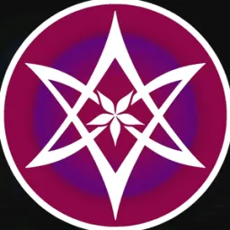
ThelemaCord™
ThelemaCord is the premier Discord destination for practitioners and students of Aleister Crowley’s Thelema and ceremonial magick. As one of the largest communities of its kind, it offers a wealth of resources on the Law of Thelema, A:.A:., and O.T.O. paradigms. Members can participate in regularly scheduled discussions and study groups, providing a structured yet welcoming environment for those seeking their True Will.
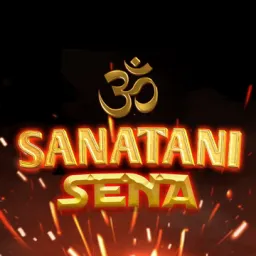
Sanatani Sena
Sanatani Sena is a dedicated space for the preservation, study, and discussion of Sanatan Dharma and the vast traditions of Hinduism. It offers a wealth of resources for those looking to deepen their understanding of Vedic wisdom and cultural practice. Through online learning and respectful discourse, the community fosters a strong sense of spiritual growth for seekers worldwide.
Shinto
Shinto is an invaluable international community for those interested in the Way of the Kami and the rich spiritual heritage of Japan. It provides a respectful environment for learning about Shinto shrines, rituals, and the deep connection between humanity and the natural world. Members from all over the globe come together to share their appreciation for Shinto’s unique perspective on life.
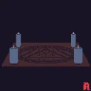
Church of Silence
The Church of Silence is an immersive, dark-aesthetic community that operates as a cult-themed sanctuary for artists, occultists, and seekers of the mysterious. It prioritizes atmosphere and creative expression, offering a unique space where the boundaries between art and magick are deliberately blurred. This server is ideal for those who embrace the darker, more profound aspects of the human psyche.
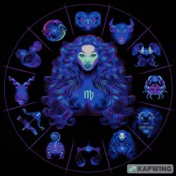
Esoteric Cosmology
Esoteric Cosmology is a positive and engaging community centered on the study of Astrology and its many esoteric applications. It invites members to share their celestial insights, natal charts, and experiences with planetary energies in a supportive social setting. Whether you are a professional astrologer or a curious newcomer, the server provides a space for exploring cosmic influences.
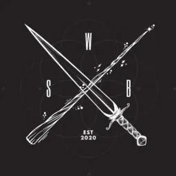
Witchy Study Buddies
Witchy Study Buddies is a dedicated educational community focused on the academic and practical study of witchcraft and the occult. It operates much like a digital campus, offering structured study groups, reading circles, and workshops for practitioners of all skill levels. By prioritizing documented research, the server helps its members build a solid foundation in their craft.
A Christian Server
A Christian Server is a mission-focused community dedicated to sharing the Gospel and building a supportive fellowship of believers. It offers regular Bible studies, prayer groups, and channels for discussing faith in the modern world, providing a sanctuary for spiritual growth. The server welcomes both lifelong Christians and those seeking to learn more about the message of Christ.
The Collective
The Collective is a free and active social hub designed for spiritual people of all backgrounds to engage in deep esoteric conversations. It provides a relaxed yet intellectually stimulating environment where members can share their journey and ask questions. The server emphasizes the value of collective experience and the power of shared gnosis in a digital age.
Sø'ho Collective
Sø'ho Collective is a soulful community dedicated to the inner discovery of the heart and spirit through various meditative and spiritual practices. It emphasizes the importance of emotional intelligence, soulful connection, and the cultivation of an authentic internal life. Through reflective dialogue, the server provides a peaceful haven for those seeking to reconnect with their self.
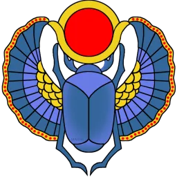
Cognitionem Aeternae
Cognitionem Aeternae serves as a cross-disciplinary hub where occultists of all practices and religious backgrounds can come together to exchange ideas. It emphasizes intellectual curiosity and the pursuit of eternal knowledge, fostering a culture of mutual respect and rigorous inquiry. Whether you are a practitioner of high magick or a student of world religions, this community provides a platform for deep dialogue.
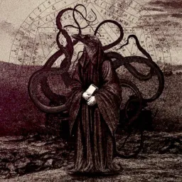
Occultism
Occultism is a large and active community hub designed to bring the global online occult community together for growth, conversation, and collective study. It balances structured learning with a casual, social atmosphere, making it an excellent entry point for those new to the esoteric arts. The server features a wide variety of topic-specific channels, ensuring that there is a place for every seeker.
5D+ Ascended Platform Of LightWarriors
The 5D+ Ascended Platform Of LightWarriors is focused on harnessing higher energies to create an interdimensional gateway to the 5th dimension. It brings together lightworkers and spiritual warriors who are dedicated to the collective ascension of humanity and the healing of the planetary grid. The community offers specialized tools for energy work and lightbody activation.
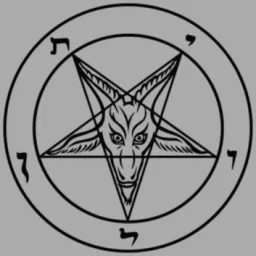
Church of Baphomet
The Church of Baphomet is a dedicated space for the sharing of vast knowledge across the fields of religion, the occult, and philosophy. It encourages a polymathic approach to spirituality, where members are supported in their study of diverse traditions and belief systems. By fostering an environment of open inquiry and scholarship, the community helps its members build a comprehensive understanding of esoteric forces.
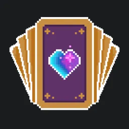
Tarotholics
Tarotholics is an inclusive, 18+ LGBTQIA-friendly community specifically designed for Tarot readers and practitioners of divination. It offers a supportive space for both beginners and experienced readers to empower each other through shared readings and study sessions. The community values diverse perspectives and the use of divination as a tool for personal growth.
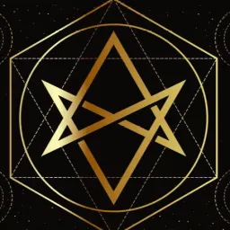
AγαπηΘελημα
Agape Thelema provides a foundational and welcoming introduction for seekers who are curious about Thelema, ceremonial magick, and the broader esoteric arts. The community focuses on clarity and accessibility, helping newcomers navigate the complexities of Aleister Crowley’s work. It is a supportive space for those starting their journey toward self-discovery and the manifestation of magical power in the world.
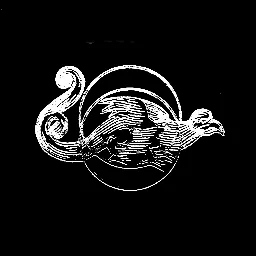
The Silent Library
The Silent Library is a highly regarded resource hub and archival space focused on charting humanity’s evolution through various spiritual and metaphysical planes. It prioritizes the collection and discussion of rare texts, lectures, and historical documents related to the occult. This server is a primary destination for the spiritual scholar who values primary sources and the preservation of ancient gnosis.
Temple Vesperitas
Temple Vesperitas is a formal Left-Hand Path temple that brings together serious witches, occultists, and mystics for the purpose of collaborative work and shadow integration. It maintains a structured atmosphere that rewards commitment and the pursuit of individual sovereignty through antinomian practices. Members are encouraged to challenge their own limits and explore the darker aspects of their magical potential.
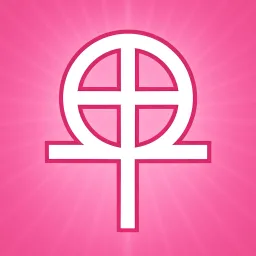
Gnostic Gospels
Gnostic Gospels is a community dedicated to the study and modern application of the lost scriptures found in the Nag Hammadi library. It provides a space for practitioners to explore Gnosticism not just as a historical curiosity, but as a living spiritual path focused on direct experiential knowledge. Through study groups and contemplative practice, the server helps its members navigate the complexities of gnostic thought.
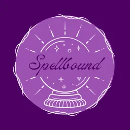
Spellbound
Spellbound is a vibrant and modern community of witches and magic-users who focus on the practical application of the craft in everyday life. It emphasizes the active doing of magick, providing a space for members to share their spells and lessons learned through direct experience. With a focus on personal empowerment, Spellbound is a great environment for practitioners seeking results.
Astral Society ™
The Astral Society specializes in the practical techniques of Astral Projection, Lucid Dreaming, and the expansion of consciousness beyond the physical body. It provides a structured learning environment where members can share their out-of-body experiences and receive guidance from practitioners. Through collective experimentation, the server helps its members master the art of ethereal travel.
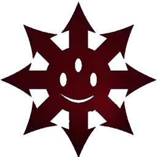
𝐒𝐘𝐙𝐘𝐆𝐘
𝐒𝐘𝐙𝐘𝐆𝐘 is a mature, 18+ community that explores the intersections of chaos magick, witchcraft, and the more transgressive aspects of the occult. It provides an immersive and hidden realm for practitioners who are not afraid to push the boundaries of their magical practice and personal identity. The community values discretion, authenticity, and the pursuit of individual sovereignty through mastery.
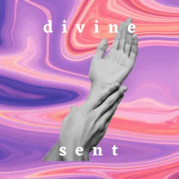
divine sent
divine sent is a supportive and nurturing space for seekers on all spiritual paths to learn, grow, and connect with their higher purpose. It prioritizes commonality and mutual respect, offering a diverse array of resources for personal development and spiritual alignment. By fostering a culture of gratitude, the server helps its members recognize sacredness in every step of their journey.
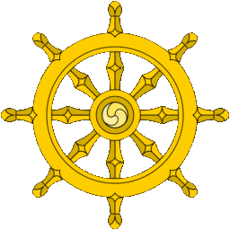
ＳＡＮＧＨＡ
ＳＡＮＧＨＡ draws its name from the ancient Pali word for community, association, and spiritual fellowship, representing one of the three jewels of the Buddhist tradition. This server creates a warm and engaged gathering space for students of Indian philosophy, Dharmic practice, and contemplative traditions. Whether you are exploring the Vedas, Buddhist suttas, or broader Indic spiritual systems, ＳＡＮＧＨＡ offers a respectful forum for shared inquiry.
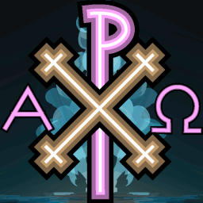
Progressive Christianity
Progressive Christianity is a fully affirming, LGBTQ+ inclusive server built as a warm and safe space for those navigating faith outside the bounds of conservative doctrine. It centers radical welcome, open theological inquiry, and honest discussion about the intersection of scripture, justice, and lived experience. This community is ideal for those questioning traditional church structures while maintaining a sincere relationship with Christian spirituality.
Fae Sight Tarot
Fae Sight Tarot is a thriving 18+ educational sanctuary for tarot practitioners at every level, from those just learning the arcana to seasoned readers developing advanced symbolic interpretation. The server facilitates reading swaps, card-by-card tutorials, and community discussions around the imagery, mythology, and intuitive language of the tarot. It is one of the most active tarot Discord communities for those seeking to build genuine reading skill in a supportive environment.
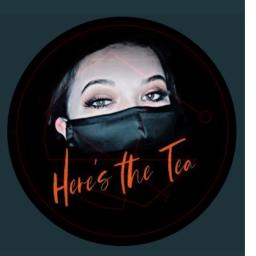
SpiritualiTEA
SpiritualiTEA is the official community Discord for the SpiritualiTEA brand, bringing together a warm and welcoming circle of spiritually curious individuals. The server blends casual conversation with meaningful exploration across a wide range of metaphysical and wellness topics. It is an excellent entry point for those new to spiritual communities who want a cozy, low-pressure environment to learn and connect with like-minded souls.
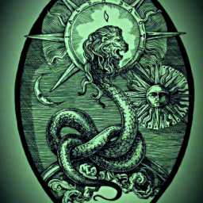
The Gnostic Hub
The Gnostic Hub is a focused, thoughtful community dedicated to the study and discussion of Gnosticism and its related esoteric traditions. Members explore Gnostic texts, Valentinian cosmology, Sethian mythology, and the broader landscape of early Christian mysticism and dualistic philosophy. Both voice and text channels provide space for structured discussion, making it an invaluable resource for serious students of the hidden knowledge traditions.
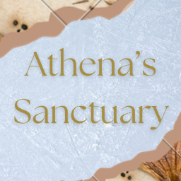
Athena's Sanctuary
Athena's Sanctuary is a welcoming and structured hangout for witches and pagans to share knowledge, sharpen their craft, and build genuine community. Named for the goddess of wisdom and strategy, the server places an emphasis on learning, whether you are exploring Wicca, eclectic witchcraft, spell work, or divination. It is an ideal space for practitioners seeking a nurturing environment where wisdom is freely exchanged and personal growth is celebrated.
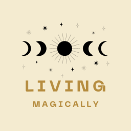
livingmagically
livingmagically is an 18+ community dedicated to the living practice of witchcraft, paganism, and polytheism through authentic daily engagement. The server embraces practitioners from all traditions, Wiccan, Heathen, reconstructionist, eclectic, and devotional, and creates a space for real discussion about the challenges and beauty of a magical life. It is a grounded community for those who integrate spiritual practice into their everyday reality rather than treating it as a hobby.
The Law of One
The Law of One is a dedicated study community built around the Ra Material, one of the most sophisticated bodies of channeled metaphysical literature ever recorded. The server provides a focused environment for unpacking Ra's dense cosmology of densities, harvests, and the nature of intelligent infinity. Whether you are a newcomer encountering these concepts for the first time or a longtime student of the Ra contact, this community offers structured discussion and genuine seekership.
Occult & Pagan Central
Occult & Pagan Central is a mature 21+ hub that honors the full diversity of pagan, occult, and witchcraft traditions across cultures and experience levels. The server creates a serious and respectful space for practitioners who want real discourse rather than surface-level discussion, covering everything from folk magic and animism to high ceremonial practice. Its intentionally adult focus ensures conversations remain substantive and community members bring genuine lived experience to the table.
Lunar Coven
Lunar Coven is a rich and inclusive witchcraft and spirituality server that covers the full spectrum of the craft, from tarot and astrology to numerology, herbalism, and spellwork. Proudly LGBTQIA+ and disability-friendly, the community ensures that every seeker feels seen and supported on their path. The lunar theme runs deep throughout, celebrating the rhythms of the moon and natural cycles as a foundation for magical practice.
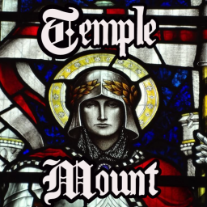
Temple Mount
Temple Mount is an 18+ SFW community built around the legacy and mystique of the Knights Templar, one of history's most enigmatic and influential esoteric brotherhoods. The server fosters the Templar virtues of friendship, respect, and loyalty, creating a structured and honourable space for members to connect. It attracts those drawn to the intersection of medieval chivalric orders, esoteric Christianity, and the spiritual dimensions of the Crusader era.
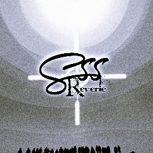
Spiritual Study Server
The Spiritual Study Server (SSS) is a communal learning space dedicated to the collaborative exploration of spiritual topics across traditions and disciplines. It provides a supportive environment where members can share research, ask deep questions, and engage in structured discussion about metaphysics, religion, personal practice, and consciousness. Whether you are a self-directed autodidact or thrive in group learning environments, SSS offers a steady and welcoming space for ongoing spiritual inquiry.
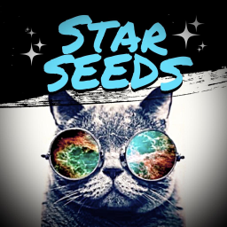
Starseeds
Starseeds is a dedicated gathering space for individuals who identify with the starseed concept, souls believed to have originated from other star systems and arrived on Earth with a specific mission of awakening and service. The community provides a non-judgmental forum to discuss galactic origins, past life memories, extraterrestrial contact, and the accelerating shift in planetary consciousness. It is a rare space where these experiences are taken seriously and explored with genuine community support.
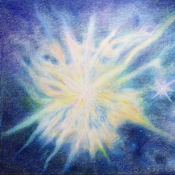
The Otherworld
The Otherworld takes its name from the mythological realm existing alongside and beyond ordinary reality, the liminal space inhabited by spirits, ancestors, and divine forces throughout Celtic and Indo-European tradition. This community focuses on metaphysical exploration at the edges of conventional understanding, bridging folklore, spirit work, and esoteric philosophy. It is a quiet but deep destination for those drawn to the veil between worlds and the entities that inhabit it.
Blackthorn Library
Blackthorn Library is a darkly elegant, library-themed Discord community designed for the serious student of esoteric knowledge and occult literature. Like the blackthorn tree, a symbol of protection, magic, and the otherworld, the server is a repository of rare and practical information spanning grimoires, folk magic, ceremonial traditions, and mystical philosophy. It is an ideal gathering place for those who believe knowledge is the highest form of power and who seek to build a formidable personal library of the arcane.
Mystic Grove
Mystic Grove evokes the sacred woodland clearing, a place where the veil thins and the divine becomes tangible to those who approach with reverence. This community serves those interested in nature-based and mystic spiritual paths, from druidry and green witchcraft to animism and earth-centered metaphysics. The server cultivates a grounded atmosphere for practitioners who feel called to the natural world as their primary temple and source of spiritual nourishment.
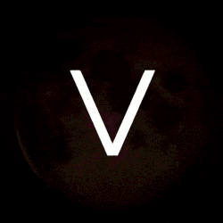
Vedic Astrology
Vedic Astrology is a serious, research-based server dedicated to Jyotish, the ancient Indian science of light and planetary influence descending from the Vedic tradition. The community goes far beyond popular Sun sign astrology, exploring the nakshatra system, dasha cycles, divisional charts, and the deep philosophical underpinnings of Vedic cosmology. It is one of the most intellectually rigorous astrology Discord communities available to English-speaking practitioners of the Jyotish system.
☾ LIMINAL TAROT 𖤓
☾ LIMINAL TAROT 𖤓 exists at the threshold, in the space between the known and the mysterious where the tarot's imagery is most potent. This server is dedicated to tarot reading with an emphasis on symbolism, depth psychology, and the liminal dimensions of the cards as tools for navigating life's transitional states. It is a beautifully atmospheric community for readers who want to go beyond memorized meanings into the living language of archetypes and inner transformation.
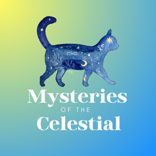
Mysteries of the Celestial
Mysteries of the Celestial is a friendly and multi-disciplinary community that weaves together Vedic and Tropical astrology, tarot, and broader occult study into a unified exploration of cosmic influence. The server welcomes members at all experience levels, creating an approachable environment that doesn't sacrifice depth or nuance. It is an exceptionally well-rounded destination for anyone curious about how celestial cycles and symbolic systems intersect to illuminate the human experience.
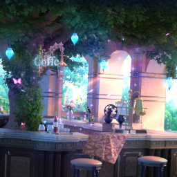
The Midnight Tavern
The Midnight Tavern opens its doors to wanderers, seekers, and those who do their best thinking after midnight. This is a friendly, home-like spiritual community built around genuine connection rather than rigid structure, offering a warm hearth for exploring all things metaphysical and esoteric. The tavern atmosphere creates a natural intimacy that encourages authentic conversation, making it one of the more socially inviting spiritual Discord servers for those who want community alongside their practice.
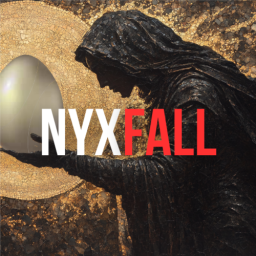
NyxFall
NyxFall takes its name from Nyx, the primordial Greek goddess of night, mother of countless cosmic forces, and the fall into deeper mystery. This eclectic group of esoteric practitioners gathers to share lived experiences, debate metaphysical frameworks, and learn through authentic discourse and community interaction. NyxFall resists dogma, welcoming members from diverse traditions who share a common appetite for depth, curiosity, and honest exploration of the unseen.
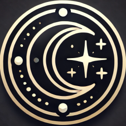
Astrology Magic
Astrology Magic is a vibrant cosmic community blending the science of planetary cycles with the art of magical timing and intention. Members share chart insights, transit interpretations, electional astrology techniques, and personal astrological research in an atmosphere of mutual enthusiasm and discovery. It is an excellent space for those who want to move beyond passive astrology consumption into active application of celestial cycles in their magical and spiritual practice.
NOTA
NOTA is an esoteric and spiritual community centered on open and authentic conversation across a broad range of metaphysical topics. The name invites an anti-dogmatic posture, no single tradition dominates the space, encouraging genuine cross-traditional dialogue. It is an accessible and genuine gathering point for seekers who value intellectual honesty and personal experience over institutional authority in their spiritual explorations.
Elusive Perspectives
Elusive Perspectives is a multidisciplinary community focused on the intersection of Astrology, Philosophy, Psychology, Spirituality, and Mythology. It offers a structured space for seekers to explore the unseen dimensions of reality through diverse lenses, fostering a rich environment for both intellectual inquiry and personal spiritual growth. Whether you are studying ancient myths or modern psychological archetypes, this community provides the depth necessary for a truly holistic exploration of the self.
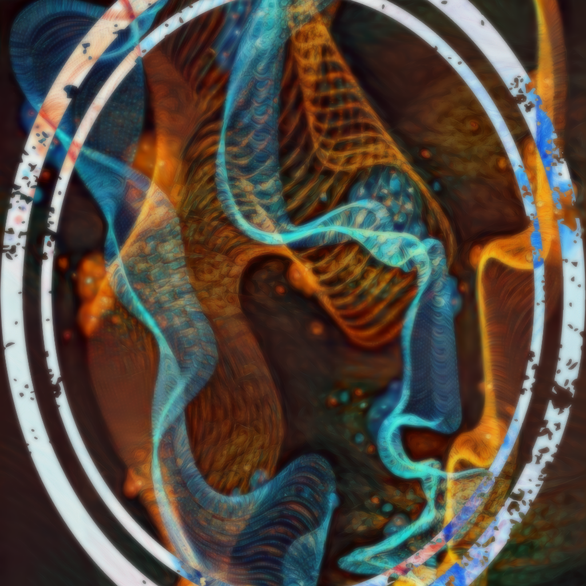
Agōgē
The Agōgē is a self-improvement and spiritual growth community focused on discipline, energy, mindset, and esoteric knowledge. Here, inner work is paired with real-world discipline so your growth shows up in your daily life, not just in your thoughts. Step in and take control.
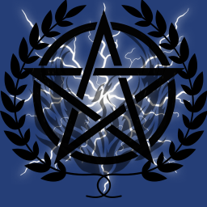
Arcane Agora
Arcane Agora is a community of modern pagans, Hellenists, and occultists exploring spirituality, philosophy, and magic. Echoes from the Temple still whisper through the veil—come as you are, speak with the divine, and keep the sacred flame alive.
Beyond Concept
Dedicated to the pursuit of spiritual knowledge that leads to remembering your true nature as that which is beyond a self. We are not searching for Divinity, we are remembering its existence within our own hearts. Sovereignty and the training of dormant spiritual powers are covered in length.
Life is Surreal
A spirituality server where the main goal is to help seekers find their divine inner peace. Regain control of your mind, thoughts, and overall life through shared experiences, insights, and teachings intended to help better spread spiritual knowledge to a wider audience.
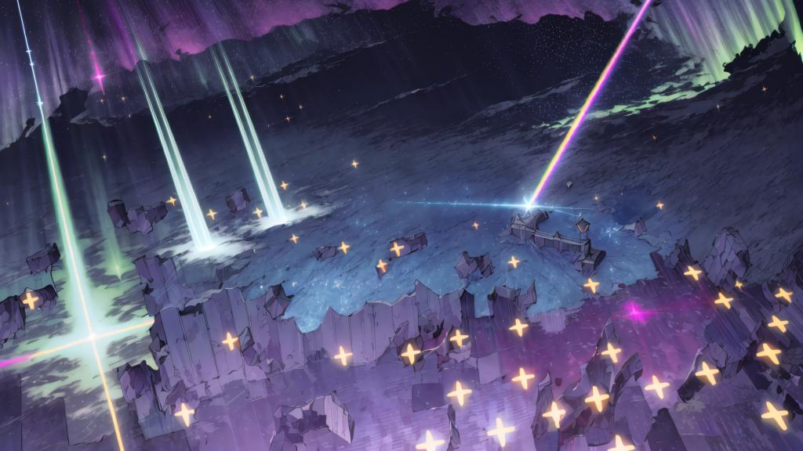
Wolfhive
An 18+ community dedicated to exploration and astral projection. Delve into spirituality, occult traditions, shamanism, and esoteric study. Featuring events, coaching, healing, and divination for serious practitioners of the craft.
Freedom of Reason
A space for engaging debates and genuine intellectual exchange. Discourse ranges from philosophy and science to psychology, in a community where ideas take precedence. Intellectual growth thrives in an open and principled environment where all are equal.
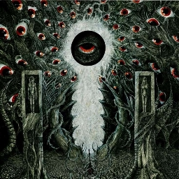
Wake Up
Dedicated to awakening the consciousness that lies dormant within the physical embodiment. Understanding concepts incomprehensible to the mundane mind is the key to true liberation and perspective shift on the alchemical path.
The Sacred Chronicles
A growing server designed to help you develop debating skills through discussions on politics, philosophy, and religion. Featuring resource channels, giveaways, and an active chatroom, it provides a space for intellectual growth and structured exchange on history and literature.
Schediasm
For those interested in rigorous analysis of what goes unsaid and unseen in philosophy. Schediasm explores europanalysis, "inventing living thought" beyond deconstruction. Grounded in the works of Valdinoci, Laruelle, and Grelet, it offers a deep dive into the internal and invisible logic of reality.
Celestial Mind
An 18+ community focusing on astral projection, bilocation, remote viewing, and spirit work. Celestial Mind is a place to share knowledge, techniques, and experiences with like-minded people. All skill levels are welcomed, from beginners to advanced practitioners seeking deeper esoteric understanding.
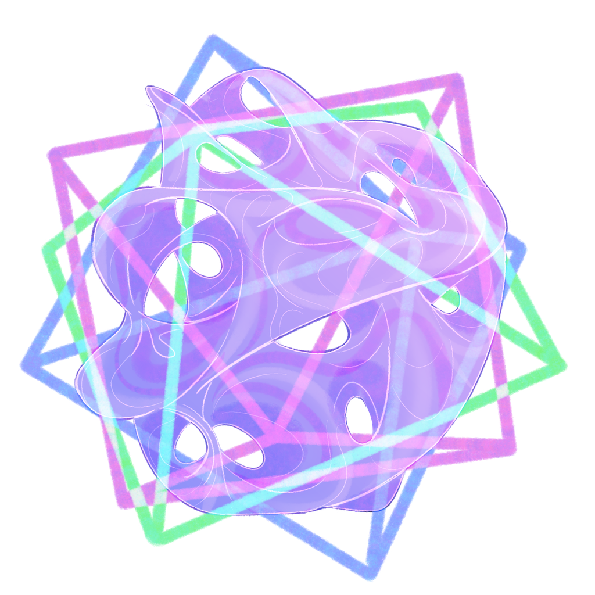
Fractalized Fates
Dedicated to sacred geometry and how it shapes our cosmos. This community explores symbolism, sigils, numerology, and the esoteric foundations of reality. It is a space for those seeking to understand the architectural design of the universe and the spiritual significance of geometric patterns.
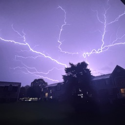
Inspiration Station
A place where nerdy and creative people come together to support each other's endeavors. Whether you are a gamer, artist, musician, or content creator, this community provides a supportive environment for fun and shared artistic growth. A sanctuary for all types of multi-media expression.